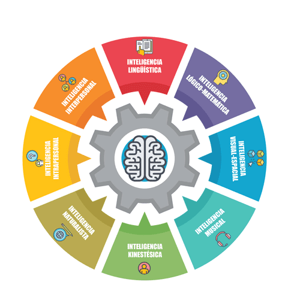

La Teoría de las Inteligencias Múltiples de Gardner
Teoría de las inteligencias multiples

Inteligencias múltiples: 8 tipos de inteligencia
- Inteligencia lingüística
- Inteligencia lógico-matemática
- Inteligencia espacial
- Inteligencia musical
- Inteligencia corporal y cinestésica
- Inteligencia intrapersonal
- Inteligencia interpersonal
- Inteligencia naturalista
Enlaces de interés
Videos
Referencias textuales